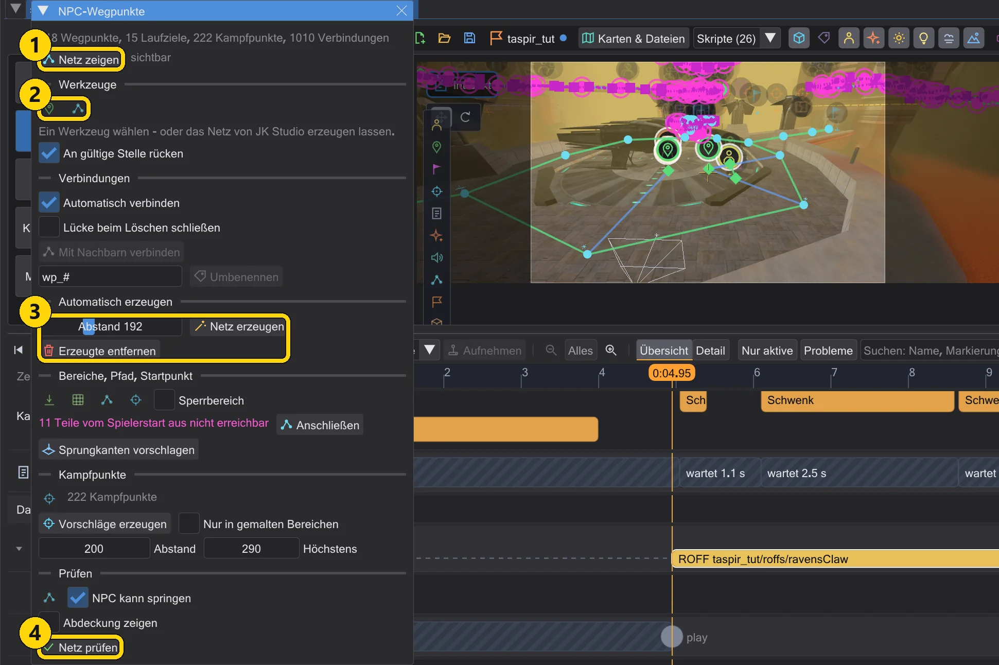
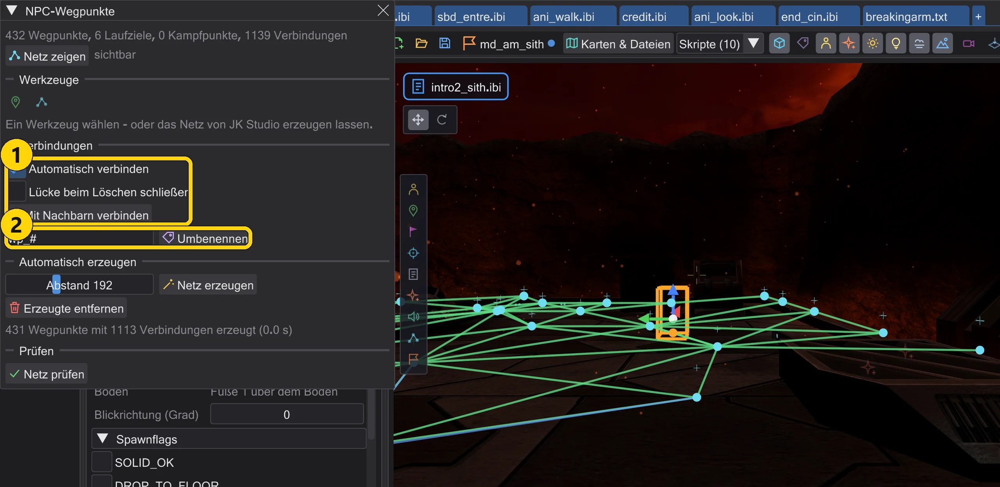
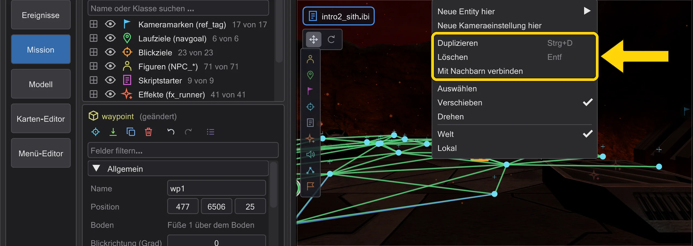
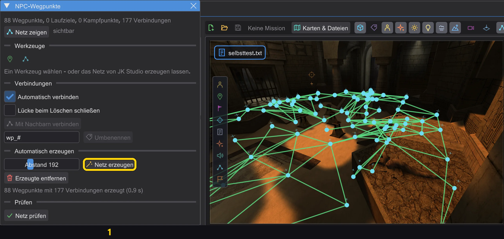
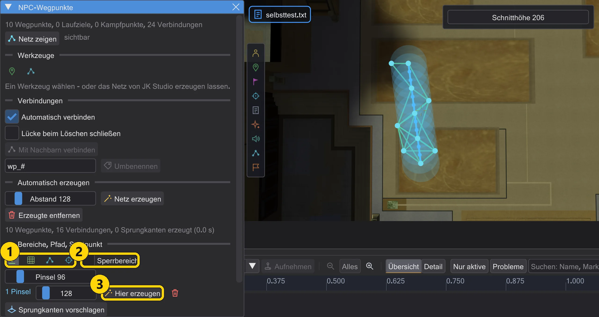
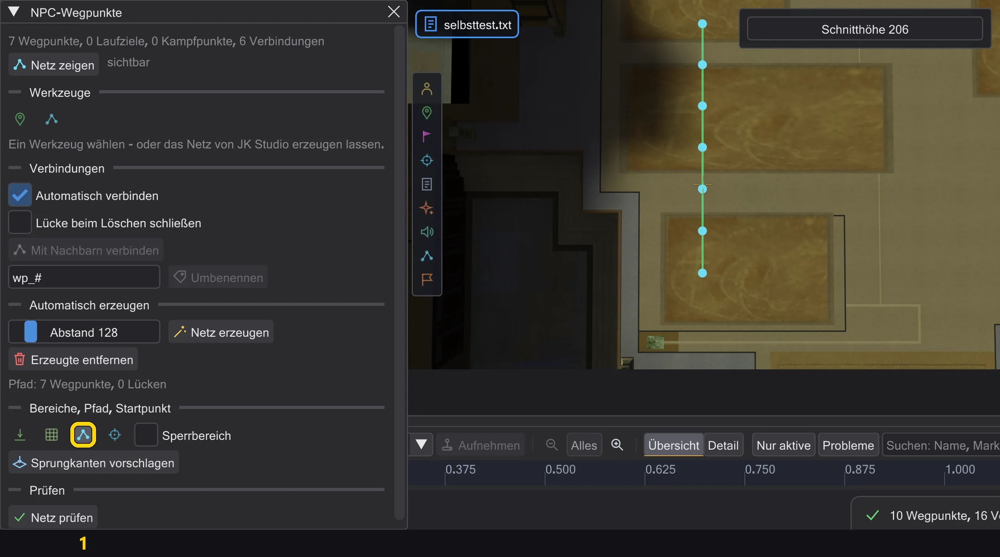
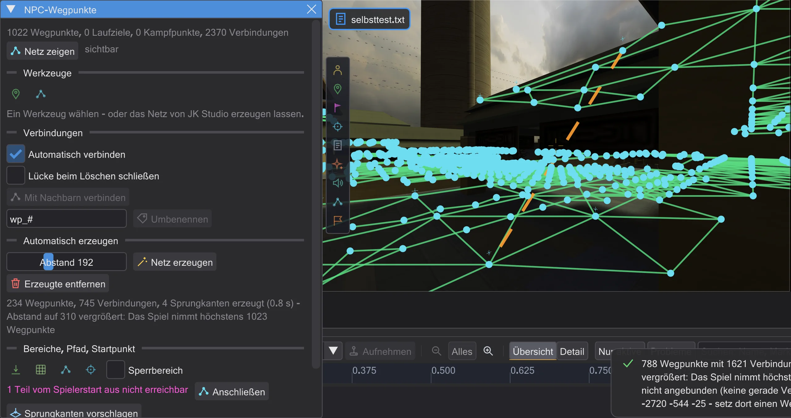
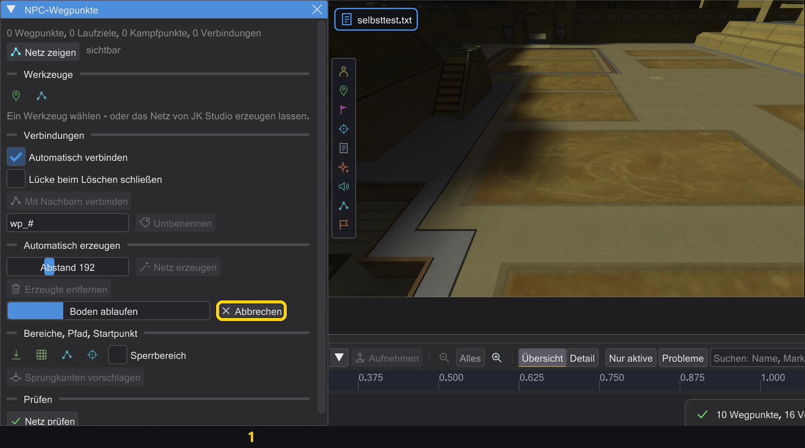

Karte und Szene
NPC-Wegpunkte
Das Netz, auf dem NPCs laufen - zu fernen Laufzielen in Zwischensequenzen und wenn sie verfolgen oder fliehen. Von Hand setzen oder vom Programm bauen lassen, dann prüfen.

| Nr. | Name | Was es macht |
|---|---|---|
| 1 | Netz zeigen | Zeigt das Netz auf der Karte. |
| 2 | Wegpunkte setzen / Verbinden | Punkte durch Klicken auf den Boden setzen / zwei Punkte verbinden. |
| 3 | Netz erzeugen / Erzeugte entfernen | Ein Netz über den begehbaren Boden verteilen / das Erzeugte entfernen. |
| 4 | Netz prüfen | Findet, was das Spiel ablehnen würde; ein Klick auf ein Problem fliegt hin. |
Geöffnet wird es mit NPC-Wegpunkte in der Kartenleiste. Netz zeigen zeichnet die Wege: grün von Hand gesetzt (target), blau automatisch (Navgoals und Kampfpunkte), orange Sprünge (targetJump).
- Wegpunkte setzen: auf den Boden klicken - jeder neue Punkt wird mit dem vorigen verbunden. Umschalt+Klick beginnt einen neuen Weg, Esc beendet.
- Verbinden: zwei Punkte anklicken verbindet sie (Strg: ein Sprung); zwei verbundene anklicken trennt sie. Ein Punkt hat höchstens vier Verbindungen.
- Netz erzeugen verteilt Wegpunkte über den begehbaren Boden (Abstand: die Originalkarten nutzen etwa 230) und verbindet sie - ein Rückgängig-Schritt. Erzeugte entfernen entfernt nur diese, von Hand gesetzte bleiben.
- Netz prüfen findet, was das Spiel ablehnen würde oder NPCs nicht nutzen können; ein Klick auf ein Problem fliegt hin.
Löschen, automatisch verbinden, duplizieren#

| Nr. | Name | Was es macht |
|---|---|---|
| 1 | Automatisch verbinden / Lücke beim Löschen schließen / Mit Nachbarn verbinden | Verbinden wie im Spiel - automatisch, beim Löschen oder für die Auswahl. |
| 2 | Umbenennen | Die gewählten Wegpunkte nach Muster umbenennen. |
- Löschen (Delete, der Knopf im Inspektor oder Löschen im Rechtsklickmenü) nimmt auch jedes
targetbistargetJumpmit, das den gelöschten Wegpunkt nannte - im selben Rückgängig-Schritt. Nennen sie andere Entities, fragt das Programm erst. Mit Lücke beim Löschen schließen verbinden sich die Nachbarn eines gelöschten Wegpunkts untereinander, wo die Kantenprüfung des Spiels es erlaubt. - Automatisch verbinden (Vorgabe an): Ein Wegpunkt, den du setzt, verschiebst oder duplizierst, verbindet sich mit den Wegpunkten im Umkreis von Abstand, die auch das Spiel verbindet - mit der Kantenprüfung des Spiels selbst (NAV::TestEdge, in Jedi Outcast HardConnect), die nächsten zuerst, höchstens vier
target-Felder je Punkt. Nach dem Verschieben fallen Verbindungen weg, die das Spiel verwerfen würde; alles in einem Rückgängig-Schritt. Mit Nachbarn verbinden tut dasselbe für die Auswahl. Navgoals und Kampfpunkte bleiben außen vor: Die verbindet das Spiel selbst. - Duplizieren (Strg+D oder das Rechtsklickmenü) auf mehreren Wegpunkten: Die Kopien bekommen freie Namen und bleiben untereinander verbunden, Verbindungen nach außen bleiben, wie sie waren; dann verbinden sie sich mit ihren neuen Nachbarn. Das Feld neben Umbenennen benennt die gewählten Wegpunkte nach Muster um (
#wird eine Nummer); jedestarget, das sie nannte, zieht mit. - Netz erzeugen beginnt auch an den Wegpunkten, die schon auf der Karte stehen: Setz einen in einen Raum, den die Erzeugung ausgelassen hat, und erzeuge noch einmal - der Raum bekommt sein Netz, verbunden mit deinem Wegpunkt.

Erzeugung: Räume, Treppen, Türen#

| Nr. | Name | Was es macht |
|---|---|---|
| 1 | Netz erzeugen | Wegpunkte über allen Boden verteilen, den ein NPC erreicht. |
- Netz erzeugen läuft wie ein NPC im Spiel vom Spielerstart, den Figuren, den Laufzielen und den Wegpunkten auf der Karte aus: 15 Einheiten je Schritt (ein NPC rennt so weit in einem Bild), Stufen bis 18 hinauf und hinab (
STEPSIZE), auf Boden, der nicht steiler ist, als das Spiel erlaubt (MIN_WALK_NORMAL), gegen die Kollision des Spiels - Clip-Brushes halten auf, Deko ohne Kollision nicht. So erreicht es jeden Raum, in den eine Figur gehen kann, auch durch schmale Türen. - Punkte kommen ins Raster von Abstand, oben und unten an jede Treppe und Rampe, die mehr als eine Stufe steigt, und überall dorthin, wo das Raster eine Lücke von mehr als einem Abstand ließe - in Türen und kleine Räume. Rampen bekommen auch auf der Schräge Punkte.
- Eine Verbindung bleibt nur, wenn eine Figur die gerade Linie gehen kann und die Kantenprüfung des Spiels selbst (NAV::TestEdge, in Jedi Outcast HardConnect) sie in beide Richtungen behält. Türen zählen als offen, wie der Netzbau des Spiels eine Tür öffnet, die im Weg steht; ob NPCs durch dürfen, entscheidet sich beim Spielen, wie im Spiel.
- Das Spiel nimmt höchstens 1023 Wegpunkte. Braucht das Raster mehr, wird der Abstand größer (bis zum Dreifachen von Abstand), und die Meldung sagt es. Dächer und Vorsprünge, die man nur springend erreicht, bekommen beim Laufen keine Punkte; klick dort mit Startpunkt (unten).
Bereiche, Pfad, Startpunkt, Sprungkanten#

| Nr. | Name | Was es macht |
|---|---|---|
| 1 | Pinsel Lasso Pfad Startpunkt | Bereich malen (Pinsel, Lasso), Pfad ziehen, Startpunkt klicken. |
| 2 | Sperrbereich | Der nächste gemalte Bereich ist ein Sperrbereich. |
| 3 | Hier erzeugen | Nur in diesem Bereich erzeugen, mit eigenem Abstand. |
- Pinsel und Lasso malen mit gedrückter linker Maustaste auf den Boden - in der 3D-Ansicht oder in der Draufsicht. Hier erzeugen läuft wie ein NPC nur im Bereich und setzt Wegpunkte im Abstand des Bereichs, wo noch keine sind; sie verbinden sich mit den Wegpunkten ringsum über die Kantenprüfung des Spiels, wie beim Setzen von Hand. Ein Rückgängig-Schritt. Bereiche bleiben für die Karte gespeichert (im Ordner der Einstellungen, nicht in der .bsp) und kommen beim nächsten Öffnen wieder.
- Mit Sperrbereich ist der nächste Bereich ein Sperrbereich (rot): Erzeugung, Pfad und Startpunkt setzen dort nie einen Wegpunkt. Punkte ringsum verbinden sich trotzdem darüber hinweg, wo die Kantenprüfung des Spiels besteht.

- Pfad: eine Linie über den Boden ziehen. Entlang der Linie entstehen Wegpunkte alle Abstand, auf den Boden gesetzt wie bei der Erzeugung, und Nachbarn werden verbunden, wo die Kantenprüfung des Spiels die Kante in beide Richtungen behält. Wo nicht oder wo das Spiel keinen Wegpunkt behielte, markiert ein rotes Kreuz die Stelle, und die Meldung nennt die erste. Der Pfad schließt an die Wegpunkte ringsum an. Ein Rückgängig-Schritt.
- Startpunkt: auf Boden klicken, den die Erzeugung nicht erreicht hat - ein Dach, ein Sims, einen Raum hinter einer Kante. Von dort läuft sie wie ein NPC weiter, setzt Wegpunkte, wo das Netz den Boden noch nicht abdeckt, und schließt sie an: zu Fuß, wenn eine Figur dorthin gehen kann, sonst mit Sprungkanten (unten). Ein Rückgängig-Schritt.

- Sprungkanten sind
targetJump. Das Spiel springt nur auf einer solchen Kante, prüft sie beim Laden der Karte nicht und lässt nur NPCs darauf, die springen können (Machtsprung oder eine Klasse, die von selbst springt). Sprungkanten vorschlagen (auch nach einem Startpunkt und Anschließen) schreibt eine nur zwischen Teile des Netzes, die sonst nicht verbunden sind, und nur, wo ein NPC den Sprung im Spiel wirklich schafft, in beide Richtungen - mit derselben Prüfung, die das Spiel vor dem Sprung macht (NPC_TryJump, NPC_Jump): höchstens 750 weit, höchstens 450 hinab, Boden unter dem Ziel und ein Bogen, durch den der Kasten des NPCs passt. Jeder Wegpunkt hat eintargetJump-Feld. Jedi Outcast kennt keine Sprungkanten. - Wegpunkte, die der Spielerstart über das Netz nicht erreicht, sind violett gezeichnet, und das Fenster zählt die Teile. Anschließen läuft von jedem solchen Teil zum Netz (wie mit einem Startpunkt dort, in zwei Abständen um ihn) und schließt ihn an - zu Fuß, sonst mit Sprungkanten.

- Die Erzeugung dauert auf großen Karten einige Sekunden. Sie läuft im Hintergrund: Das Fenster zeigt Fortschritt und Schritt, und du kannst dich weiter umsehen oder in anderen Fenstern arbeiten. Das Ergebnis kommt am Ende in einem Rückgängig-Schritt - dasselbe Netz wie direkt gerechnet. Ändern sich die Entities inzwischen, wird es mit einer Meldung verworfen; Abbrechen hält sie an und ändert nichts.
Die Szenenvorschau nutzt dieses Netz für Läufe genau wie das Spiel: ferne Ziele brauchen hier einen Weg, sonst bleibt die Figur stehen (Wie Figuren sich bewegen - wie im Spiel). Für ein Netz braucht es mindestens vier Wegpunkte. Türen im Netz zählen, solange sie offen sind; eine geschlossene nur, wenn sie für NPCs von selbst aufgeht.